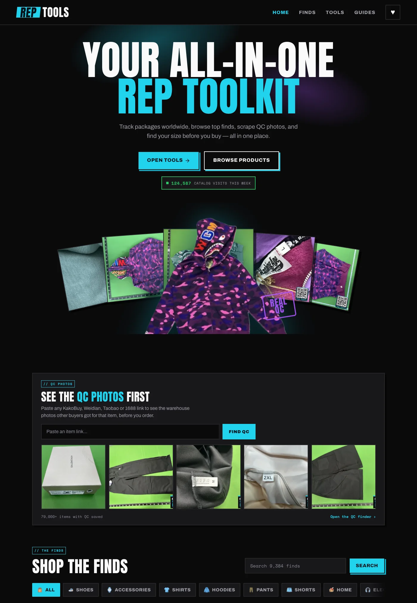
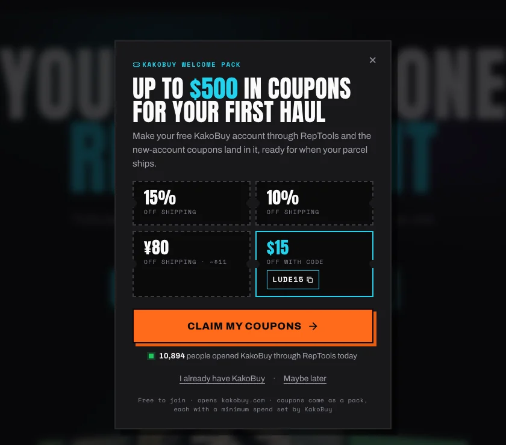

rep.tools
A brand and catalogue redesign for a live replica-fashion shop.

Overview
rep.tools is a live catalogue of replica fashion, with tools and a buying guide around it. Most visitors arrive from the founder’s TikTok channel (300k+ followers, over 200 million views). I designed the brand, navigation, catalogue and product-page layouts, and wrote the front end. The founder built and owns the app.
- My role
- BrandUX and IAFront end
- Client
- The founder
- Platform
- WebPhone first
- Scale
- 9,384 itemsOct 2026

Problems
rep.tools worked. It just had no face of its own, and it hid the products.
It looked like every vibe-coded site.
A gradient lightning-bolt icon, a gradient headline, glowing orbs and pill badges. Bland, and gone from memory a minute later.
The catalogue sat one click away.
rep.tools launched as a landing page. As the catalogue grew to roughly 6,900 items, the thing people came for sat behind Browse Products.
There were no product pages.
An item had nowhere of its own to land.
How might a fast-growing catalogue get a face of its own, and put the products first?
Goals
Vibe-coded → A brand
An identity that speaks the audience’s language.
Landing page → Catalogue
Land on the products, not a pitch.
Desktop → Phone first
Visitors come straight from a video, on a phone.
The brand speaks the audience’s language.
Visitors arrive already fluent in QC, batches, agents and hauls. So the identity speaks that language: Anton in oversized condensed caps, electric cyan on near-black, and Space Mono for anything that behaves like data.
The BATCH logo comes from the same culture: one parametric R, the master RETAIL and nine runs, each with one documented tell. It is built into the site’s code and not released yet.

The homepage is now the product catalogue.
You land in the catalogue itself: category rows you can scroll at once, with filter chips at the top. Product pages exist for the first time.
 Before
Before
After, November 2026Almost everyone arrives on a phone.
They come straight from a video, so the phone is the primary surface. Category rows scroll by thumb, and the counted category bar stays visible.
Every page now shares one design system.
I moved the identity into one shared stylesheet and pulled the navigation and footer into partials: 38 files changed. The five tools already shared one tabbed page; I restyled and regrouped them, and the shop, the tools hub and the buying guide went into the same system.
The sign-up coupon shows its terms up front.
rep.tools earns when a visitor signs up to KakoBuy through its link, so the welcome pack is the one place the site asks for something. The terms are on the card, two plain ways out sit under the button, and on a phone it rises as a bottom sheet.

Laptop Phone
PhoneWhere it stands
- 9,384items in one system
Up from 6,907 in August.
- 38files changed
One shared stylesheet, with the navigation and footer as partials.
- 1stproduct pages
Before the redesign, items had none.
The redesigned catalogue and product pages are live. Next, the founder’s analytics can show catalogue click-through and mobile time-on-site, before and after. Visit rep.tools ↗
What I learned
AI-generated default styling makes a site forgettable.
The old site ran fine. It just looked like a hundred others, so nothing about it stayed with a visitor.
The homepage should show products right away.
The founder’s channel sends a steady, already-invested audience straight at it.
How it was made
Direction
Two easier directions were on the table. Keeping the SaaS look fixed the structure but left the site looking like a tool for someone else. Going fully hype-drop failed the logistics half, where a tracking number or a price has to be legible at a glance.
Logo
Six numbers describe a version completely, so each run rebuilds exactly from code. RETAIL goes wherever recognition builds: the favicon, the share card, the nav. The batches appear only where someone has already arrived, so the logo never splits at first sight.
Tools and guide
Each of the five tools is a card that carries its own number in Space Mono (3,100 carriers, 25 agents, 86 countries). The buying guide takes a first-time buyer through an order in ten steps.